To enlarge, click some photos which have titles in light blue color background.
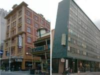 | 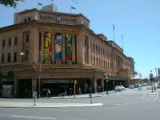 | 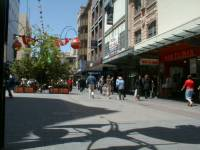 | 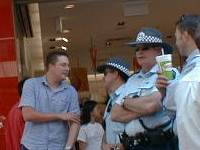 |
| motels | Station & Casino | Down-town | Policeman |
We arrived Adelaide early time and eat sandwiches as breakfast at the bus center. Then We looked for a hotel to stay for some days but generally hotel rates was expensive. Finally I found a motel for 110 ASD by a guide book and went there soon. Next day we moved in the near motel which was cheaper and bigger for 80 ASD. Our motel, that was like a hotel but just has a small kitchen, was close to the down-town and Casino. Without any reason we felt Adelaide was intimate and friendly. Specially I liked Western hats police officers in Adelaide wore. Adelaide as a town was not so big but not small, and not so urban but not rural.
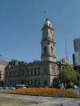 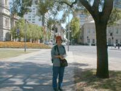 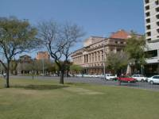 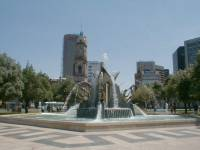
Victoria Square is the center of city and around here has a great look being beautiful and composed.
China town, business center, tram terminal and bus center were near by. Here free buses worked so hard that you would be convenience to transfer inside city.
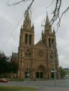 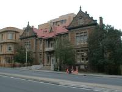 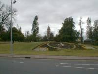 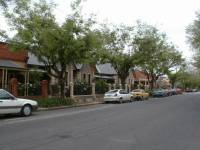
According to a guide book we got at information center we strolled on a route around city.
Sent Peters Church is said as the most beautiful church in Australia. And we encountered and enjoyed traditional buildings and houses and so on.
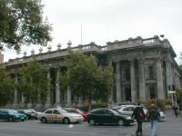 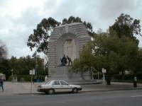 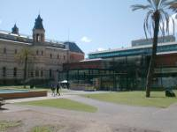 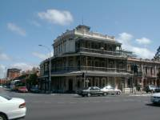
Other day we took different route, and found and call in famous facilities. Visiting those places, We understood how Australian has longed the culture of mother country, Europe, and wanted to conserve the culture of Aborigine.
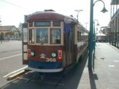 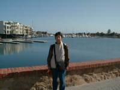 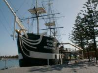 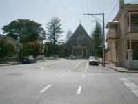
Grenelge has beautiful beaches and it is easy to go by tram. We got here after 25 minutes trip to see beach and the replica of H.M.S.Buffalo which brought 269 immigrants in 1836.
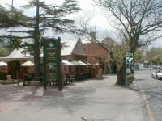 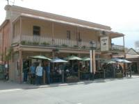 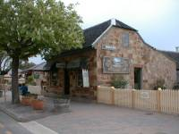 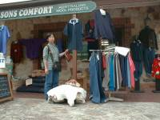
I took a part in a Hahndorf tour. That town was famous for Old German style village as Adelaide Highlights. A lot of tourists came and strolled in small town. I found a shop many people crowed and got close to know why. That was a kind of beer hall which had German beer and various wieners.
city center
around Victoria Square 01 around Victoria Square 02 around Victoria Square 03 Victoria Square
route 01
Sent Peters Church route 01-02 route 01-03 traditional houses
route 02
State assembly hall War memorial South Australia Museum North Terrace
Grenelge
Tram terminal Grenelge 02 H.M.S. Buffalo Grenelge 04
Hahndorf
Hahndorf 01 Hahndorf 02 Hahndorf 03 Hahndorf 04
{kind=link}
{kind=link}
{kind=link}
{kind=link}